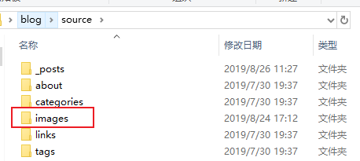
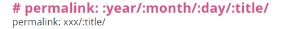
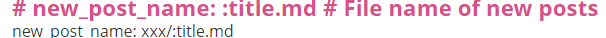

在搭建好hexo博客后一直使用的是文字记录形式，没有添加过图片。其实图片能更加加深理解，但是一直没用上。
md文件的图片引用方式主要有两种：一是绝对路径（大部分使用图床等等），二是相对路径（将图片全部放在一起上传，使这两者处于同一物理位置）。什么叫物理位置，我瞎取得一个名字便于理解。简单的举例，我的博客是挂载到hexo page上的，也就是说md文件最后被从本地上传到GitHub上，这时候顺便将图片也一起上传过去。然后不管本地是否存在，文件和图片显示都在云端（GitHub上）。
首先，本地的md文件是默认新建在blog/source/_posts里面的，在source文件夹下所有的文件在hexo d推送的时候都会被一模一样复制到云端，这时候我们就可以把图片文件夹放着，一起上传上去。

这里最好不要把图片放在posts文件夹里面，因为hexo在解析的过程中_下划线属于隐藏文件夹，也就是说除了posts文件夹以外，其他的都会完全一样推送
既然图片文件夹已经创建好，那么接下来就开始设置路径。
注意：这里有坑
看到这里有朋友迫不及待操作，直接把图片放在images里面，接着md文件相对引用，嗯图片显示出来了奈斯！结果hexo d一推送，哦豁图片显示不出来，这就是掉坑了。md文件能显示图片并不一定代表推送后能显示图片
看到这里就有小伙伴懵了，wtf本地都是好的为啥一推送就凉凉。所以啊，别着急啊慢慢踩坑。
| 本地路径 | / | / | |
|---|---|---|---|
| source | _posts | 1.md文件（引用图片路径–../../images/1.png） | 显示成功 |
| images | 1.png | ||
| 云端路径（public） | 2019 | 7/23/1.md文件（引用图片路径–../../images/1.png） | 显示失败 |
| images | 1.png |
通过这两个的比较很容易发现，本地路径的引用不变，推送到云端后对应的文件夹不存在（或者说是图片已存在但是相对路径是错的）。云端图片引用路径：../../images/1.png，在退回两级后到了7文件夹下，此时该文件夹下并没有images文件夹，此时你就会发现问题，图片路径本地和云端环境不一致。
将本地和云端的路径层次设置为一样。不过，这里涉及到config文件参数设置问题。
有两种方法：
这里我用的是第二种方法：
修改云端生成目录

修改本地生成目录：

| 本地路径 | / | / | / | |
|---|---|---|---|---|
| source | _posts | xxx | 1.md | 显示成功 |
| images | 1.png | |||
| 云端路径（public） | xxx | 同名文件夹 | 1.html | 显示成功 |
| images |
到这里基本上就好了，网上也有一些别的办法，装插件什么的，我觉得很麻烦还是这个搞懂原理简单点。
评论系统未开启，无法评论！